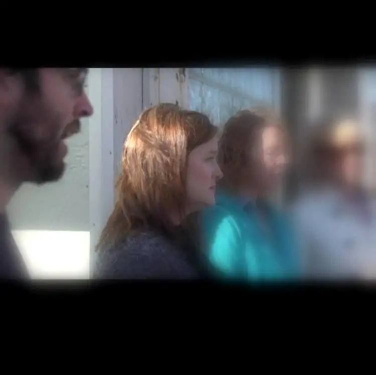

If my friend “A” hadn’t nudged me, I might have missed the opportunity. But she did gently elbow me, and I followed her eyes to the sidewalk across the street from where we stood, as we do most weeks on Wednesdays — abortion day.

Most of the time, you can tell the difference between when someone is coming to that corner of Downtown for lunch, or to follow through on an abortion appointment. With the latter, there’s a searching look, and sometimes, the vehicle carrying them will circle around several times. If we see their faces while they are driving by or walking near, often their looks come plastered with worry lines.
Some come from a long distance, and others, from just across the river, or the other side of town.
The two coming toward me now provided a confounding scenario. A young couple, the man held a baby carrier, carrying what we presumed, rightly, to be a child. Could they possibly be here for what was most often the case? What was their story?
The mama was dressed in a beautiful yellow and blue, African-patterned blouse. Even from across the street, I could see her raven curls cascading down either side of her face. I approached the curb, slowly, not wanting to scare them but also, to meet them before they had a chance to reach the door of the building; a structure that exits to collect cash in exchange for making a “problem” — the existence of a small human being that was not planned — disappear.
From the corner of my eye, I could see the tall escort in his blue vest inching toward me, his protective “body guard” stance intact. I prepared to be shouted over, or otherwise stopped from talking to the couple, but I didn’t worry about what might happen and only hoped for a chance.
Surprisingly, the chance was given. It was as if a protective force enveloped the couple, holding them bound just inches away from the curb on the street. As they reached me, I began talking gently, to the man first. From their dialect and language struggles, it quickly became clear they’d come from somewhere else — another country — and yet they held their own, and we carried out a conversation, though with some stops and starts. Nevertheless, I felt that I was getting through, and they certainly were getting through to me as well.
For a while, I just tried to get a sense of why they’d come. She’d just had a baby, only 3 months old, she said. She couldn’t do this again so soon.
They didn’t want to do it, he said, but they’d made up their mind, and now, there was no other choice.
I wanted to make sure I was clear about their intentions, and to make sure they understood they were about to enter an abortion facility. I told them about our local pregnancy help center, and how they would, free of charge, be helped there, and drawn into love; that people were waiting to walk them through this next hard part. They would not be alone.
I told them about my friends who’ve had abortions and regret it to this day, trying to convince them to not make the same mistake, which would end in irreversible regret.
I’m a mother of five, I shared, and certainly, understand how overwhelming it can be, and how hard it would be to be open to another new life so soon. But that if they chose the path of life, it would be a worthy option that they could feel good about.
As I talked, I could feel the other sidewalk advocates and their prayers right behind me. I felt their support. I knew that I wasn’t alone, either.
I assured the couple that even if they were to leave with us right then, they could come back tomorrow; they wouldn’t be forced into anything. Would they consider just giving us a chance to help them think this through a little more, so they wouldn’t have to live with the memory of a dead child?
And I couldn’t help it. I told the woman — because it was true — how beautiful she was. And the man, how much I admired his strength in being a father, and that I knew deep inside he really wanted to protect his children — both of them. I told the woman how strong she is, and that I knew she could do this, and again, that there would be help. It’s not too late, I promised.
They did not move. They were listening to me. “We love you,” I said to the woman. I reached out and put my hand on her shoulder. She did not resist. I sensed that she knew of my sincerity. I sensed her conflicted heart.
The man, too, was clearly conflicted. His body language and words all revealed this. I encouraged him, gently pleaded, and again, explained the waiting help. I put my hands again on the woman’s arm. “Let us help you. It doesn’t cost anything at all, and you will not be forced into anything.”
Now, I have to credit the escorts, here, because I know their whole purpose is to keep us away from the clients, but in this instance, they allowed the conversation to happen. I am grateful for that — for the things they allowed me to say that, in the past, have been shouted over and thwarted. Was it grace? Was it spiritual protection? I’m not sure, but it was different, and I thank God for it.
There was one moment, though, when the tall escort scolded me for touching the woman’s arm. My action was purely a natural, maternal response; that’s all. In the end, her response settled the matter. She looked at the man. “I don’t mind that she touched me. You don’t like it but I’m saying it’s okay.”
Everything was in place for a “save,” and I felt so hopeful it might happen, there at the end of my shift when I had least expected it. But then, someone remarked that we needed to get all the way onto the sidewalk because of the traffic, and of course, I knew this was the right thing to do.
But that small change in space marked the beginning of the end, because once the beautiful couple with their babies — one in the womb and one without — stepped onto the curb near the clinic, it was as if an invisible force began pulling them in. We stayed there for a while longer, the hemming and hawing continuing, but as soon as they caught sight of the door and saw the escorts waving them in…it was done. It was over. The end of the baby’s life, and the damage to the couple’s souls, had begun.
They went in. Right then and there, we lost them, to the Culture of Death. This sweet couple who’d come all that way from someplace else — a place where, it appeared, political correctness doesn’t exist, where it’s okay for a mother to reach out to another mother in love — had been tainted by our culture; the one that says, “In your country, perhaps, they do it another way, but here, we have an easy fix. Here, we get rid of the problem, and if you follow this way, everything will be okay. Welcome to our culture! Yes, one of your offspring will have to be sacrificed, but it’s really no big deal. It’s ‘common.’ It’s what we do here.”
As they were pulled further into the vortex, I saw the beautiful woman and her colorful shirt and her gorgeous, long curls leave me, and I could no longer speak words of love into her precious soul. And I could hear The Evil One snickering with delight.
But I know that our good God reins supreme. I’m confident that as sure as the snickering snake was there dancing, God was there, too, crying with me and the others who’d come to try to save this lovely couple from the snares of death, and that in time, the Lord of all will set things aright. There’s just no way this could possibly be the end. To believe that is the true deception.
I wish I could have stayed to be there, too, when this dear one emerged a few hours later, broken. But life called me away. I had to reconcile with the fact that I had done what I could, and now, I had to let God do the rest. And I have to trust that somehow, my presence, and that of those praying behind me, had made a mark on the lives of this young couple and that it will bear fruit in time.
Last week brought another scenario to the sidewalk. The BBC came to town and did a story on the weekly goings-on each week at North Dakota’s only abortion facility. Though I tried to duck out, in the end, I was among those who were interviewed about what we do there and why.
Version 1 with voice-over: https://www.youtube.com/watch?v=UWCCcsTwbPg
Version 2, slightly shorter: http://www.bbc.com/news/election-us-2016-37412116
Please pray for us, and the clients and workers all, that someday, we will view this scourge as an ugly chapter in our history that has closed, forever.
“Eternal Father…For the sake of your sorrowful passion, have mercy on us and on the whole world.”